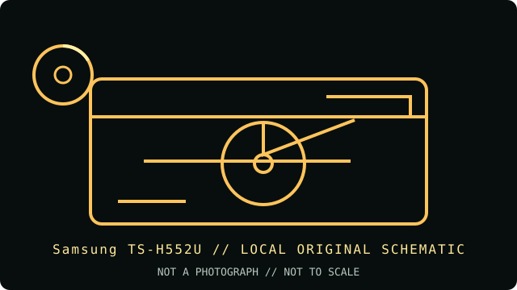

[ INDIVIDUAL COMPONENT // OPTICAL DRIVES ]
Samsung TS-H552U
The Samsung TS-H552U is an internal E-IDE DVD writer with DVD±R and DVD+R DL recording. Its DVD+R DL and rewritable speeds differ from single-layer DVD rates; confirm the exact TS-H552U model marking rather than transferring specifications from another Samsung drive.

IDENTIFICATION: Samsung TS-H552U · internal 16× DVD writer generation. Match the full model marking and firmware to the cited documentation before applying media ratings.
Model-specific specifications
| Catalog subcategory | DVD writers |
|---|---|
| Exact product identifier | Samsung TS-H552U |
| DVD/CD media support | Writes DVD±R, DVD+R DL, DVD±RW, CD-R and CD-RW. Reads DVD-ROM, supported DVD±R/RW and DVD-RAM, plus common CD audio/data formats. DVD-RAM support is read-only; this is not a DVD-RAM writer. |
| Maximum read/write speeds | Write: DVD±R up to 16×; DVD+R DL up to 5×; DVD±RW up to 4×; CD-R up to 40×; CD-RW up to 32×. Read: DVD-ROM up to 16×; CD-ROM up to 48×. DVD-RAM read is supported; the manual does not specify it as a recordable format. |
| Interface and mechanics | Internal 5.25-inch E-IDE/ATAPI (PATA), standard 40-pin ATA connection, rear device jumper and 2 MB buffer. |
| Host compatibility | Designed for legacy PC hosts with a PATA/ATAPI controller, internal 5.25-inch bay and compatible power. Archived manual support covers contemporary Windows PC environments; recording software, BIOS and media support must match the host. Newer systems require independently compatible PATA bridging. |
| Variant and use notes | Do not transfer DVD+R DL 5× or DVD±RW 4× specifications to other Samsung TS-H55x models. Verify the TS-H552U label, firmware, jumper selection and disc type before recording. |
Compatibility and preservation
Advertised maximum rates are media- and firmware-dependent; they do not guarantee successful recording on every blank disc. For archival use, record the model, firmware, media identifier, write speed and software version, then verify by readback and checksum.
- Confirm the exact product label and PATA jumper position before installation; do not infer features from related Samsung SKUs.
- Use supported blank media and compatible recording software, and verify the completed disc by readback.
- Handle optical media by its edge or hub, store it in a cool, dry location, and preserve an unmodified original where possible.
Manufacturer and archive sources
- Samsung TS-H552U technical specifications — CDRInfo archiveModel-specific supported DVD/CD media, rates and interface.
- Samsung TS-H552U user manual — ManualsLib archiveArchived English manual for installation, host compatibility and specifications.
These references document the named model; they do not certify a particular used drive, firmware revision or blank-media batch. Confirm the exact SKU and region/OEM variant on the hardware label.